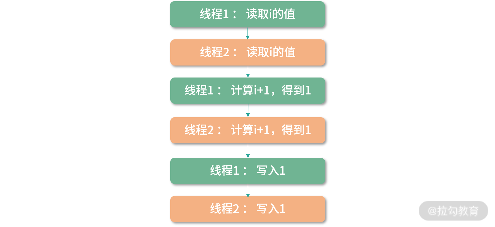
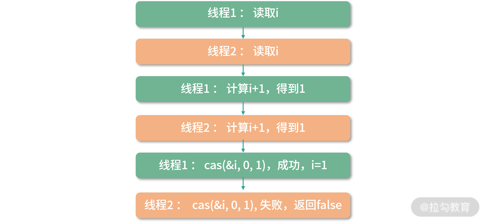

- 00 开篇词 为什么大厂面试必考操作系统？.md.html
- 00 课前必读 构建知识体系，可以这样做！.md.html
- 01 计算机是什么：“如何把程序写好”这个问题是可计算的吗？.md.html
- 02 程序的执行：相比 32 位，64 位的优势是什么？（上）.md.html
- 03 程序的执行：相比 32 位，64 位的优势是什么？（下）.md.html
- 04 构造复杂的程序：将一个递归函数转成非递归函数的通用方法.md.html
- 05 存储器分级：L1 Cache 比内存和 SSD 快多少倍？.md.html
- 05 (1) 加餐 练习题详解（一）.md.html
- 06 目录结构和文件管理指令：rm -rf 指令的作用是？.md.html
- 07 进程、重定向和管道指令：xargs 指令的作用是？.md.html
- 08 用户和权限管理指令： 请简述 Linux 权限划分的原则？.md.html
- 09 Linux 中的网络指令：如何查看一个域名有哪些 NS 记录？.md.html
- 10 软件的安装： 编译安装和包管理器安装有什么优势和劣势？.md.html
- 11 高级技巧之日志分析：利用 Linux 指令分析 Web 日志.md.html
- 12 高级技巧之集群部署：利用 Linux 指令同时在多台机器部署程序.md.html
- 12 (1)加餐 练习题详解（二）.md.html
- 13 操作系统内核：Linux 内核和 Windows 内核有什么区别？.md.html
- 14 用户态和内核态：用户态线程和内核态线程有什么区别？.md.html
- 15 中断和中断向量：Javajs 等语言为什么可以捕获到键盘输入？.md.html
- 16 WinMacUnixLinux 的区别和联系：为什么 Debian 漏洞排名第一还这么多人用？.md.html
- 16 (1)加餐 练习题详解（三）.md.html
- 17 进程和线程：进程的开销比线程大在了哪里？.md.html
- 18 锁、信号量和分布式锁：如何控制同一时间只有 2 个线程运行？.md.html
- 19 乐观锁、区块链：除了上锁还有哪些并发控制方法？.md.html
- 20 线程的调度：线程调度都有哪些方法？.md.html
- 21 哲学家就餐问题：什么情况下会触发饥饿和死锁？.md.html
- 22 进程间通信： 进程间通信都有哪些方法？.md.html
- 23 分析服务的特性：我的服务应该开多少个进程、多少个线程？.md.html
- 23 (1)加餐 练习题详解（四）.md.html
- 24 虚拟内存 ：一个程序最多能使用多少内存？.md.html
- 25 内存管理单元： 什么情况下使用大内存分页？.md.html
- 26 缓存置换算法： LRU 用什么数据结构实现更合理？.md.html
- 27 内存回收上篇：如何解决内存的循环引用问题？.md.html
- 28 内存回收下篇：三色标记-清除算法是怎么回事？.md.html
- 28 (1)加餐 练习题详解（五）.md.html
- 29 Linux 下的各个目录有什么作用？.md.html
- 30 文件系统的底层实现：FAT、NTFS 和 Ext3 有什么区别？.md.html
- 31 数据库文件系统实例：MySQL 中 B 树和 B+ 树有什么区别？.md.html
- 32 HDFS 介绍：分布式文件系统是怎么回事？.md.html
- 32 (1)加餐 练习题详解（六）.md.html
- 33 互联网协议群（TCPIP）：多路复用是怎么回事？.md.html
- 34 UDP 协议：UDP 和 TCP 相比快在哪里？.md.html
- 35 Linux 的 IO 模式：selectpollepoll 有什么区别？.md.html
- 36 公私钥体系和网络安全：什么是中间人攻击？.md.html
- 36 (1)加餐 练习题详解（七）.md.html
- 37 虚拟化技术介绍：VMware 和 Docker 的区别？.md.html
- 38 容器编排技术：如何利用 K8s 和 Docker Swarm 管理微服务？.md.html
- 39 Linux 架构优秀在哪里.md.html
- 40 商业操作系统：电商操作系统是不是一个噱头？.md.html
- 40 (1)加餐 练习题详解（八）.md.html
- 41 结束语 论程序员的发展——信仰、选择和博弈.md.html
18 锁、信号量和分布式锁：如何控制同一时间只有 2 个线程运行？
锁是一个面试的热门话题，有乐观锁、悲观锁、重入锁、公平锁、分布式锁。有很多和锁相关的数据结构，比如说阻塞队列。还有一些关联的一些工具，比如说 Semaphore、Monitor 等。这些知识点可以关联很多的面试题目，比如：
- 锁是如何实现的？
- 如何控制同一时间只有 2 个线程运行？
- 如何实现分布式锁？
面试官通过这类题目考查你的这部分知识，就知道你对并发的理解是停留在表面，还是可以深入原理，去设计高并发的数据结构。这一讲我将帮你把锁类问题一网打尽。
原子操作
要想弄清楚锁，就要弄清楚锁的实现，实现锁需要底层提供的原子操作，因此我们先来学习下原子操作。
原子操作就是操作不可分。在多线程环境，一个原子操作的执行过程无法被中断。那么你可以思考下，具体原子操作的一个示例。
比如i++就不是一个原子操作，因为它是 3 个原子操作组合而成的：
- 读取 i 的值；
- 计算 i+1；
- 写入新的值。
像这样的操作，在多线程 + 多核环境会造成竞争条件。
竞争条件
竞争条件就是说多个线程对一个资源（内存地址）的读写存在竞争，在这种条件下，最后这个资源的值不可预测，而是取决于竞争时具体的执行顺序。
举个例子，比如两个线程并发执行i++。那么可以有下面这个操作顺序，假设执行前i=0：

虽然上面的程序执行了两次i++，但最终i的值为 1。
i++这段程序访问了共享资源，也就是变量i，这种访问共享资源的程序片段我们称为临界区。在临界区，程序片段会访问共享资源，造成竞争条件，也就是共享资源的值最终取决于程序执行的时序，因此这个值不是确定的。
竞争条件是一件非常糟糕的事情，你可以把上面的程序想象成两个自动提款机。如果用户同时操作两个自动提款机，用户的余额就可能会被算错。
解决竞争条件
解决竞争条件有很多方案，一种方案就是不要让程序同时进入临界区，这个方案叫作互斥。还有一些方案旨在避免竞争条件，比如 ThreadLocal、 cas 指令以及 “19 讲”中我们要学习的乐观锁。
避免临界区
不让程序同时进入临界区这个方案比较简单，核心就是我们给每个线程一个变量i，比如利用 ThreadLocal，这样线程之间就不存在竞争关系了。这样做优点很明显，缺点就是并不是所有的情况都允许你这样做。有一些资源是需要共享的，比如一个聊天室，如果每次用户请求都有一个单独的线程在处理，不可能为每个请求（线程）都维护一份聊天记录。
cas 指令
另一个方案是利用 CPU 的指令，让i++成为一个原子操作。 很多 CPU 都提供 Compare And Swap 指令。这个指令的作用是更新一个内存地址的值，比如把i更新为i+1，但是这个指令明确要求使用者必须确定知道内存地址中的值是多少。比如一个线程想把i从100更新到101，线程必须明确地知道现在i是 100，否则就会更新失败。
cas 可以用下面这个函数表示：
cas(&oldValue, expectedValue, targetValue)
这里我用的是伪代码，用&符号代表这里取内存地址。注意 cas 是 CPU 提供的原子操作。因此上面的比较和设置值的过程，是原子的，也就是不可分。
比如想用 cas 更新i的值，而且知道i是 100，想更新成101。那么就可以这样做：
cas(&i, 100, 101)
如果在这个过程中，有其他线程把i更新为101，这次调用会返回 false，否则返回 true。
所以i++程序可以等价的修改为：
// i++等价程序
cas(&i, i, i+1)
上面的程序执行时，其实是 3 条指令：
读取i
计算i+1
cas操作：比较期望值i和i的真实值的值是否相等，如果是，更新目标值
假设i=0，考虑两个线程分别执行一次这个程序，尝试构造竞争条件：

你可以看到通过这种方式，cas 解决了一部分问题，找到了竞争条件，并返回了 false。但是还是无法计算出正确的结果。因为最后一次 cas 失败了。
如果要完全解决可以考虑这样去实现：
while(!cas(&i, i, i+1)){
// 什么都不做
}
如果 cas 返回 false，那么会尝试再读一次 i 的值，直到 cas 成功。
tas 指令
还有一个方案是 tas 指令，有的 CPU 没有提供 cas（大部分服务器是提供的），提供一种 Test-And-Set 指令（tas）。tas 指令的目标是设置一个内存地址的值为 1，它的工作原理和 cas 相似。首先比较内存地址的数据和 1 的值，如果内存地址是 0，那么把这个地址置 1。如果是 1，那么失败。
所以你可以把 tas 看作一个特殊版的cas，可以这样来理解：
tas(&lock) {
return cas(&lock, 0, 1)
}
锁
锁（lock），目标是实现抢占（preempt）。就是只让给定数量的线程进入临界区。锁可以用tas或者cas来实现。
举个例子：如果希望同时只能有一个线程执行i++，伪代码可以这么写：
enter();
i++;
leave();
可以考虑用cas实现enter和leave函数，代码如下：
int lock = 0;
enter(){
while( !cas(&lock, 0, 1) ) {
// 什么也不做
}
}
leave(){
lock = 0;
}
多个线程竞争一个整数的 lock 变量，0 代表目前没有线程进入临界区，1 代表目前有线程进入临界区。利用cas原子指令我们可以对临界区进行管理。如果一个线程利用 cas 将 lock 设置为 1，那么另一个线程就会一直执行cas操作，直到锁被释放。
语言级锁的实现
上面解决竞争条件的时候，我们用到了锁。 相比 cas，锁是一种简单直观的模型。总体来说，cas 更底层，用 cas 解决问题优化空间更大。但是用锁解决问题，代码更容易写——进入临界区之前 lock，出去就 unlock。 从上面这段代码可以看出，为了定义锁，我们需要用到一个整型。如果实现得好，可以考虑这个整数由语言级定义。
比如考虑让用户传递一个变量过去：
int lock = 0;
enter(&lock);
//临界区代码
leave(&lock);
自旋锁
上面我们已经用过自旋锁了，这是之前的代码：
enter(){
while( !cas(&lock, 0, 1) ) {
// 什么也不做
}
}
这段代码不断在 CPU 中执行指令，直到锁被其他线程释放。这种情况线程不会主动释放资源，我们称为自旋锁。自旋锁的优点就是不会主动发生 Context Switch，也就是线程切换，因为线程切换比较消耗时间。自旋锁缺点也非常明显，比较消耗 CPU 资源。如果自旋锁一直拿不到锁，会一直执行。
wait 操作
你可以考虑实现一个 wait 操作，主动触发 Context Switch。这样就解决了 CPU 消耗的问题。但是触发 Context Switch 也是比较消耗成本的事情，那么有没有更好的方法呢？
enter(){
while( !cas(&lock, 0, 1) ) {
// sleep(1000ms);
wait();
}
}
你可以看下上面的代码，这里有一个更好的方法：就是 cas 失败后，马上调用sleep方法让线程休眠一段时间。但是这样，可能会出现锁已经好了，但是还需要多休眠一小段时间的情况，影响计算效率。
另一个方案，就是用wait方法，等待一个信号——直到另一个线程调用notify方法，通知这个线程结束休眠。但是这种情况——wait 和 notify 的模型要如何实现呢？
生产者消费者模型
一个合理的实现就是生产者消费者模型。 wait 是一个生产者，将当前线程挂到一个等待队列上，并休眠。notify 是一个消费者，从等待队列中取出一个线程，并重新排队。
如果使用这个模型，那么我们之前简单用enter和leave来封装加锁和解锁的模式，就需要变化。我们需要把enter``leave``wait``notify的逻辑都封装起来，不让用户感知到它们的存在。
比如 Java 语言，Java 为每个对象增加了一个 Object Header 区域，里面一个锁的位（bit），锁并不需要一个 32 位整数，一个 bit 足够。下面的代码用户使用 synchronized 关键字让临界区访问互斥。
synchronized(obj){// enter
// 临界区代码
} // leave
synchronized 关键字的内部实现，用到了封装好的底层代码——Monitor 对象。每个 Java 对象都关联了一个 Monitor 对象。Monitor 封装了对锁的操作，比如 enter、leave 的调用，这样简化了 Java 程序员的心智负担，你只需要调用 synchronized 关键字。
另外，Monitor 实现了生产者、消费者模型。
- 如果一个线程拿到锁，那么这个线程继续执行；
- 如果一个线程竞争锁失败，Montior 就调用 wait 方法触发生产者的逻辑，把线程加入等待集合；
- 如果一个线程执行完成，Monitor 就调用一次 notify 方法恢复一个等待的线程。
这样，Monitor 除了提供了互斥，还提供了线程间的通信，避免了使用自旋锁，还简化了程序设计。
信号量
接下来介绍一个叫作信号量的方法，你可以把它看作是互斥的一个广义版。我们考虑一种更加广义的锁，这里请你思考如何同时允许 N 个线程进入临界区呢？
我们先考虑实现一个基础的版本，用一个整数变量lock来记录进入临界区线程的数量。
int lock = 0;
enter(){
while(lock++ > 2) { }
}
leave(){
lock--;
}
上面的代码具有一定的欺骗性，没有考虑到竞争条件，执行的时候会出问题，可能会有超过2个线程同时进入临界区。
下面优化一下，作为一个考虑了竞争条件的版本：
up(&lock){
while(!cas(&lock, lock, lock+1)) { }
}
down(&lock){
while(!cas(&lock, lock, lock - 1) || lock == 0){}
}
为了简化模型，我们重新设计了两个原子操作up和down。up将lock增 1，down将lock减 1。当 lock 为 0 时，如果还在down那么会自旋。考虑用多个线程同时执行下面这段程序：
int lock = 2;
down(&lock);
// 临界区
up(&lock);
如果只有一个线程在临界区，那么lock等于 1，第 2 个线程还可以进入。 如果两个线程在临界区，第 3 个线程尝试down的时候，会陷入自旋锁。当然我们也可以用其他方式来替代自旋锁，比如让线程休眠。
当lock初始值为 1 的时候，这个模型就是实现互斥（mutex）。如果 lock 大于 1，那么就是同时允许多个线程进入临界区。这种方法，我们称为信号量（semaphore）。
信号量实现生产者消费者模型
信号量可以用来实现生产者消费者模型。下面我们通过一段代码实现生产者消费者：
int empty = N; // 当前空位置数量
int mutex = 1; // 锁
int full = 0; // 当前的等待的线程数
wait(){
down(&empty);
down(&mutex);
insert();
up(&mutex);
up(&full);
}
notify(){
down(&full);
down(&mutex);
remove();
up(&mutex);
up(&empty)
}
insert(){
wait_queue.add(currentThread);
yield();
}
remove(){
thread = wait_queue.dequeue();
thread.resume();
}
代码中 wait 是生产者，notify 是消费者。 每次wait操作减少一个空位置数量，empty-1；增加一个等待的线程，full+1。每次notify操作增加一个空位置，empty+1，减少一个等待线程，full-1。
insert和remove方法是互斥的操作，需要用另一个 mutex 锁来保证。insert方法将当前线程加入等待队列，并且调用 yield 方法，交出当前线程的控制权，当前线程休眠。remove方法从等待队列中取出一个线程，并且调用resume进行恢复。以上， 就构成了一个简单的生产者消费者模型。
死锁问题
另外就是在并行的时候，如果两个线程互相等待对方获得的锁，就会发生死锁。你可以把死锁理解成一个环状的依赖关系。比如：
int lock1 = 0;
int lock2 = 0;
// 线程1
enter(&lock1);
enter(&lock2);
leave(&lock1);
leave(&lock2);
// 线程2
enter(&lock2);
enter(&lock1);
leave(&lock1);
leave(&lock2)
上面的程序，如果是按照下面这个顺序执行，就会死锁：
线程1： enter(&lock1);
线程2： enter(&lock2);
线程1： enter(&lock2)
线程2: enter(&lock1)
// 死锁发生，线程1、2陷入等待
上面程序线程 1 获得了lock1，线程 2 获得了lock2。接下来线程 1 尝试获得lock2，线程 2 尝试获得lock1，于是两个线程都陷入了等待。这个等待永远都不会结束，我们称之为死锁。
关于死锁如何解决，我们会在“21 | 哲学家就餐问题：什么情况下会触发饥饿和死锁？”讨论。这里我先讲一种最简单的解决方案，你可以尝试让两个线程对锁的操作顺序相同，这样就可以避免死锁问题。
分布式环境的锁
最后，我们留一点时间给分布式锁。我们之前讨论了非常多的实现，是基于多个线程访问临界区。现在要考虑一个更庞大的模型，我们有 100 个容器，每一个里面有一个为用户减少积分的服务。
简化下模型，假设积分存在 Redis 中。当然数据库中也有，但是我们只考虑 Redis。使用 Redis，我们目标是给数据库减负。
假设这个接口可以看作 3 个原子操作：
- 从 Redis 读出当前库存；
- 计算库存 -1；
- 更新 Redis 库存。
和i++类似，很明显，当用户并发的访问这个接口，是会发生竞争条件的。 因为程序已经不是在同一台机器上执行了，解决方案就是分布式锁。实现锁，我们需要原子操作。
在单机多线程并发的场景下，原子操作由 CPU 指令提供，比如 cas 和 tas 指令。那么在分布式环境下，原子操作由谁提供呢？
有很多工具都可以提供分布式的原子操作，比如 Redis 的 setnx 指令，Zookeeper 的节点操作等等。作为操作系统课程，这部分我不再做进一步的讲解。这里是从多线程的处理方式，引出分布式的处理方式，通过两个类比，帮助你提高。如果你感兴趣，可以自己查阅更多的分布式锁的资料。
总结
那么通过这节课的学习，你现在可以尝试来回答本讲关联的面试题目：如何控制同一时间只有 2 个线程运行？
老规矩，请你先在脑海里构思下给面试官的表述，并把你的思考写在留言区，然后再来看我接下来的分析。
【解析】 同时控制两个线程进入临界区，一种方式可以考虑用信号量（semaphore）。
另一种方式是考虑生产者、消费者模型。想要进入临界区的线程先在一个等待队列中等待，然后由消费者每次消费两个。这种实现方式，类似于实现一个线程池，所以也可以考虑实现一个 ThreadPool 类，然后再实现一个调度器类，最后实现一个每次选择两个线程执行的调度算法。